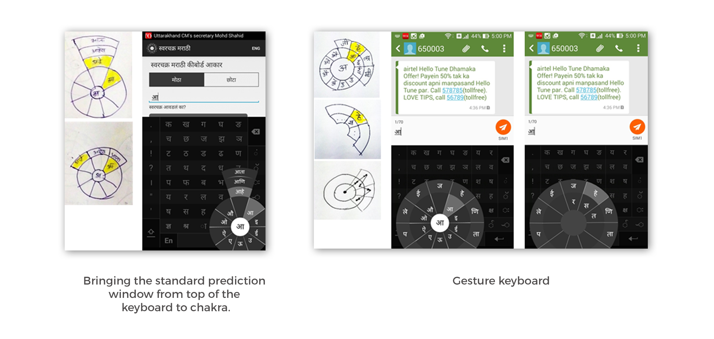
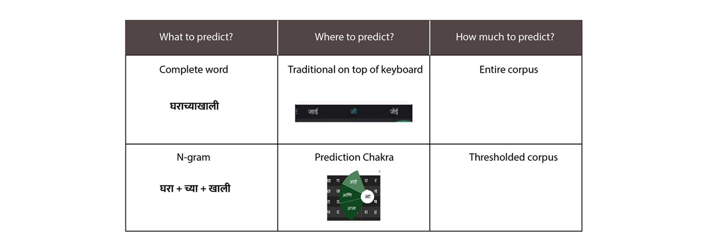
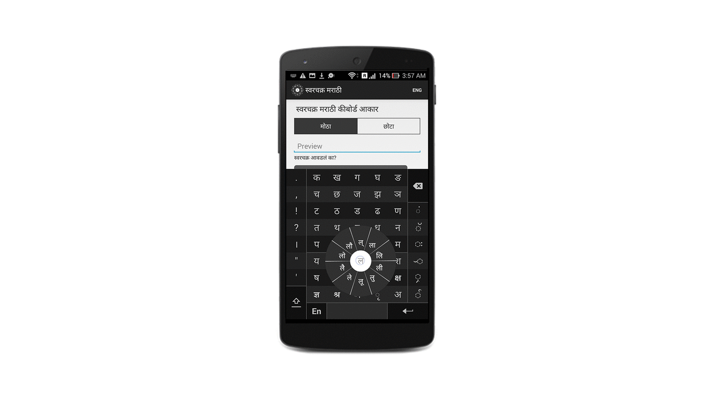
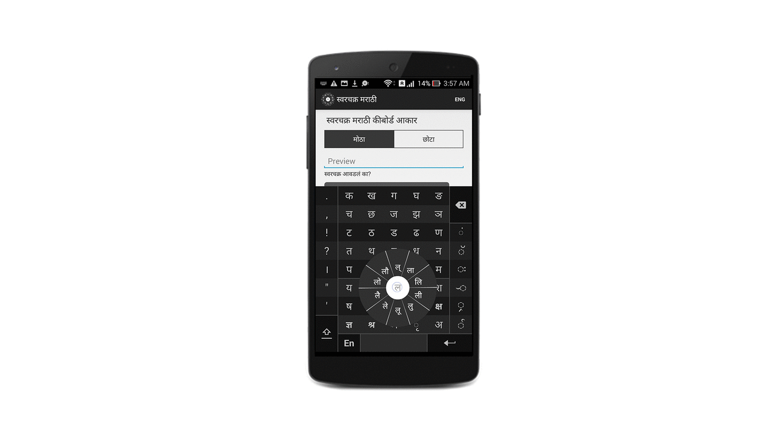
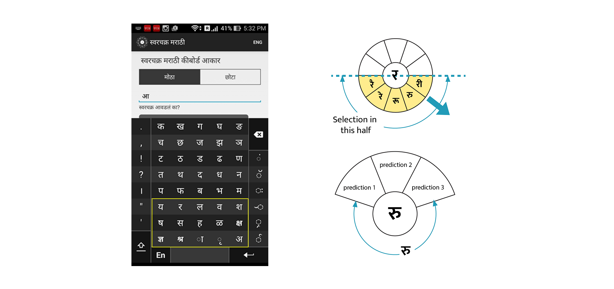
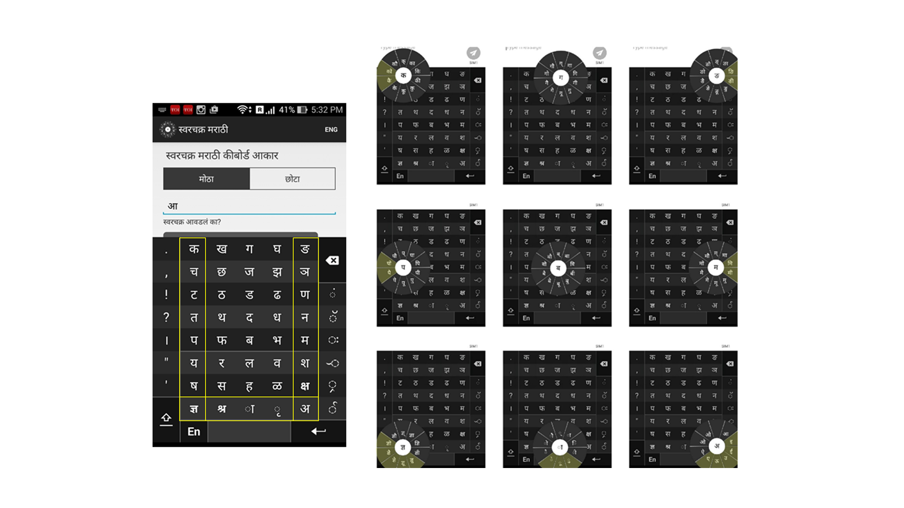

Design of predictive text input method for Swarachakra
A study towards standardization of virtual keyboards for Indian languages was carried out by various Indian Institutes of Technology(IITs). In IIT Bombay, a longitudinal study with 153 users, new to virtual keyboards was carried out. Existing 4 virtual keyboards for smartphones were examined and empirically evaluated. The results were surprising. The keyboards that used prediction saved efforts theoretically, but performed poorly in the empirical evaluation hinting at a cognitive toll of about 11%. Prediction mechanism can be considered a success only when users are using it and are able to type faster, more accurately and with less effort than non-predictive keyboards.
The important and fundamental questions which are raised from these studies are: Why do prediction methods fail? Why is the performance of non-predictive keyboards better than predictive keyboards for Indian languages even when it has been proved that prediction improves the typing performance for English? Even when a keyboard is expected to perform well in theory, why does it perform poorly in practice? Currently, we are just slapping the Indian languages on the predictive systems designed for English. Is using the same text prediction paradigm of English for Indian languages a good idea? There is a lot of work happening around the globe for various regional languages, which takes into account the morphology of language in prediction. Will considering morphology and agglutination of the language yield a better result for Indian languages?
There was a need to address all these questions. But, because of time constraints of an academic project, a smaller well-defined focus area was chosen. The project explored how the interface of the predictive system affects its performance and whether predicting less words improves the predictability of a system and improves performance. A novel predictive interface was designed, developed and tested to evaluate the hypotheses.
Hypotheses
In the earlier experiments, it was observed that users pay cognitive toll to use prediction mechanisms, as it slows down the text entry speed of users. The hypothesized reasons for this cognitive toll were:
Interface requires users to shift attention constantly
Predictions are displayed in a prediction window which generally is on top of the keyboard. If the intended prediction does not appear in the first go, users do incremental additions of characters and look for the prediction. While doing this, they have to constantly shift their attention from the keyboard to the prediction window. This visual discontinuity is one of the reason for the poor performance of current prediction systems.
Users are unable to build a conceptual model of the prediction system
Without a conceptual model of predictions of the predictive system, the behaviour of the system is completely uncertain. If there is word which a predictive system won’t predict, users still keep looking for it. This is another potential reason for the poor performance of current predictive systems.
Initial Design ideas


Design concepts

Various design concepts were generated based on the model shown above. The model answers three important questions for the prediction mechanism to work. What to Predict? Where to Predict? and How much to Predict? Concepts on all the possible combination of the model mentioned above were generated and evaluated heuristically. The final set of concepts which were selected for the final design are Complete word prediction, Prediction chakra over prediction bar and thresholded corpus for faster conceptual model building.
Final design
When a user taps on a consonant, he drags to the vowel modifier to attach a modifier. If a user further drags his finger and crosses a predefined threshold, predictions of that swarachakra unigram = consonant + vowel modifier will be displayed in the prediction chakra. There will be 3 predictions in the prediction chakra as shown in figure below. If a user goes to the prediction chakra and discovers that the prediction is not relevant, he can simply release his finger or drag further. By this, the original Swarachakra unigram will be selected. No space will be appended if user does not select prediction. If a user selects prediction, an automatic space will be appended to the selected text from prediction.
 
Design details

If a swarachakra bigram which a user selects lies in the left half of the chakra, the predictions will appear in right half and vice versa as shown in the image. This is to account the visual obstruction caused by the finger when you select a matra (vowel modifier).
For the keys which are at the bottom of the keyboard, as shown in image, if the selection is in the lower half of the swarachakra keyboard, then the predicted words won’t appear sideways as shown before, but the predicted words in the prediction chakra would be appear in the upper quadrant as shown in the image.
Limitations of the Design
The two limitations of the final design are Words with no matras (vowel modifiers) won’t be predicted and for extremities, calling the prediction chakra is a challenge as shown in diagram below. The chakra pop-ups at various extremes are shown in the image below. There is no room for the prediction chakra to render on the display. However, from the corpus, the frequency of words starting with those characters which won't be predicted because of the limitation is very less. It was observed from calculation that only 8.629% of the entire corpus lies in this region and can be neglected without a huge loss in performance.
